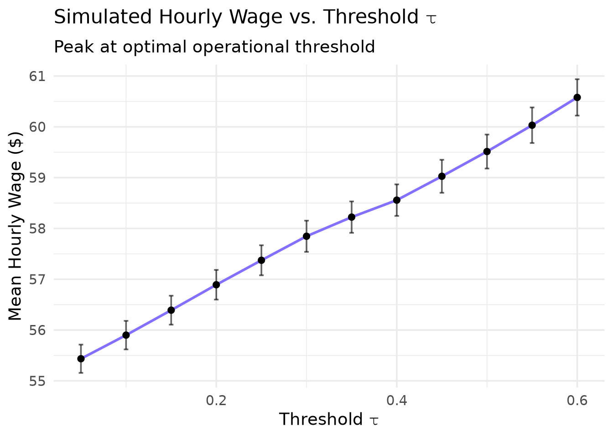
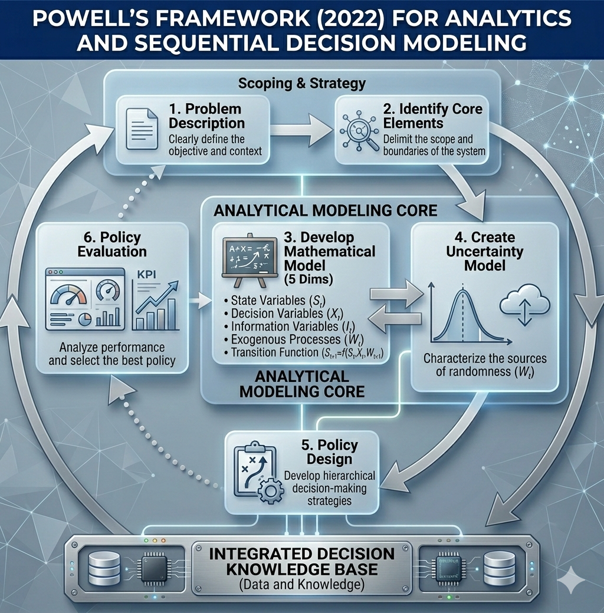
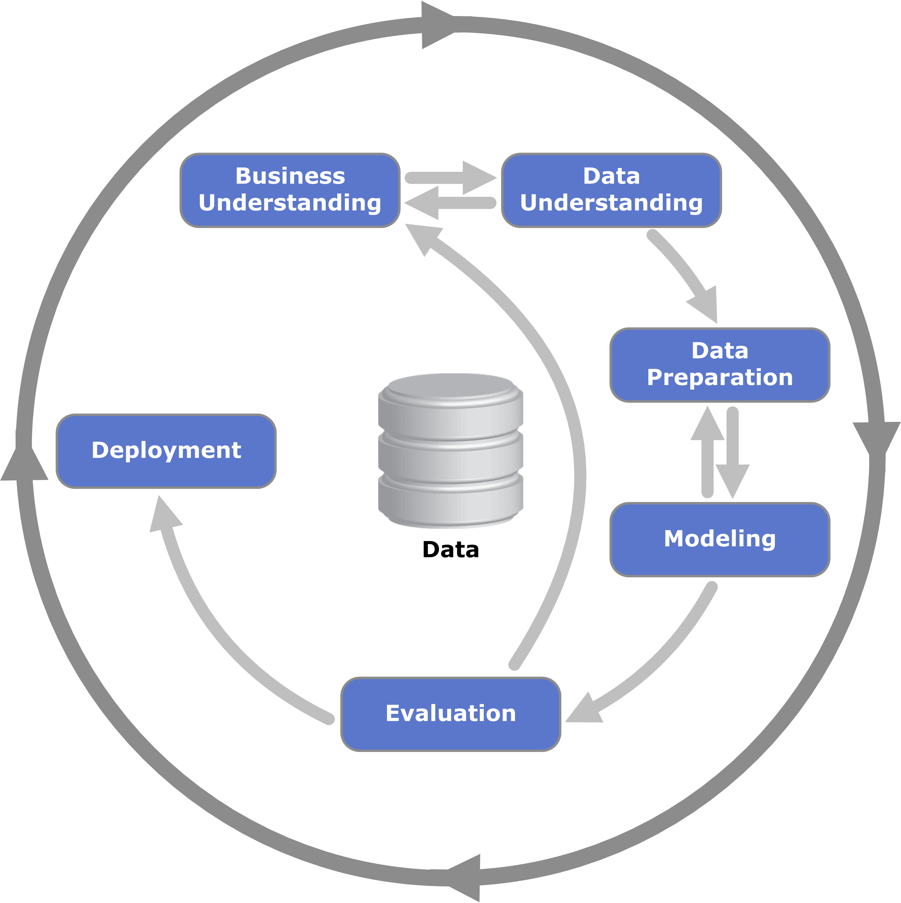
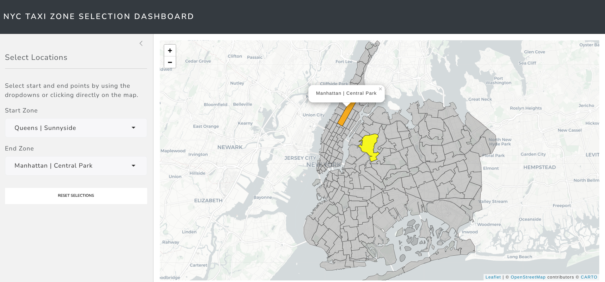

Increasing NYC Taxi Drivers Earnings
Problem Description
Opportunity
Taxi drivers could increase their earnings by changing their strategy.
Questions to solve
- How much can a taxi driver increase their monthly earnings just by skipping trips under defined conditions?
- How much can a taxi driver increase their monthly earnings just by changing their initial zone and time?
Business success criteria
Develop a strategy to increase NYC taxi drivers’ monthly earnings by 20%.
Project scope
This project will be limited to Juno, Uber, Via and Lyft taxi drivers who work in New York City in trips that take place between any zone of Manhattan, Brooklyn or Queens (the more active ones).
Results Highlight
🚖 From Predictions to Profitable Policies
Instead of treating trip acceptance as a simple classification problem, we framed it as a sequential decision task under uncertainty. The final policy, obtained by integrating an XGBoost classifier into a full‑day empirical Monte Carlo simulator, yields a mean hourly wage of $60.58 – a 9.96% lift over the myopic “take‑all” baseline ($55.09). The improvement is achieved by becoming more selective: the optimal operational threshold τ* lies at 0.6 (the highest value tested), meaning the driver accepts only trips with a predicted probability of being “high‑value” ≥ 60%. The hourly wage rises monotonically with the threshold, contradicting the intuition that one should accept most trips and reject only the worst.

Simulated hourly wage (with 95% CI) as a function of the decision threshold \(\tau\). The baseline ( \(\tau\) = 0) corresponds to the myopic “take‑all” policy.
🤖 Modeling for Decision Support
From probabilistic predictions to profit‑driven thresholds: We selected the Brier score as the primary evaluation metric because it measures both discrimination and calibration—essential when probabilities inform acceptance decisions. To translate predicted probabilities into actionable trip recommendations, we performed a threshold optimization that accounts for asymmetric misclassification costs: rejecting a lucrative trip (false negative) is far costlier than accepting a mediocre one (false positive). By simulating driver earnings across 5‑fold cross‑validation, we identified an optimal validation threshold of 0.22—well below the default 0.5. This lower threshold reflects the fact that drivers should be slightly more willing to accept trips, as the opportunity cost of waiting for a “perfect” fare outweighs the risk of a low‑value ride.
Robustness and generalisation: The final XGBoost model was evaluated on a held‑out test set, achieving a Brier score of 0.146 (matching cross‑validation) and delivering a net benefit of $0.35 per trip compared to a “take‑all” baseline. This represents a 51.5% improvement in expected cost, confirming that the cost‑benefit trade‑off remains stable on unseen data.
🎯 Sequential Decision Framework & Business Logic
The core of this project is not a simple classification task; it is a Sequential Decision Analytics problem. We transformed raw observational taxi data into a decision‑making tool by addressing two major challenges:
- The Target Variable Dilemma: The original dataset lacked a “ground truth” for whether a trip was optimal. We engineered the target variable
take_current_tripby calculating the Opportunity Cost of each trip. This involved simulating the potential earnings of waiting for a high‑value fare versus accepting the immediate request, creating a decision‑centric label from scratch. - The Baseline Paradox: We established a “Take‑All Policy” (accepting every trip) as the baseline. While the ML model shows strong predictive performance (AUC and Brier Score), we have framed the project to acknowledge that predictive accuracy does not automatically equate to policy superiority. The model is designed to optimize a threshold that maximizes net hourly earnings, not just “hits and misses.”
- Closing the ADP Loop: The final policy evaluation runs the exact same full‑day Monte Carlo simulator used for the baseline, but replaces the random trip selection with a threshold rule based on the XGBoost predictions. This apples‑to‑apples comparison provides a credible estimate of the real‑world lift.
💾 Engineering for Big Data & Software Reliability (Out-of-Core Processing)
We architected a robust, production‑grade pipeline designed to handle datasets exceeding available RAM while maintaining strict software engineering standards:
Custom Tidymodels Extensions: To integrate geospatial features seamlessly into the machine learning pipeline, we developed a custom
recipesstep. This allows for the automated preprocessing of coordinates and spatial joins within a unified workflow, ensuring that feature engineering is consistent during both training and inference.Production‑Grade R Development: To ensure reliability, the project is structured as a formal R package, moving beyond simple scripts to a maintainable codebase.
Unit Testing: We implemented a comprehensive suite of tests using
testthatto validate custom logic, specifically for the simulation functions and the customrecipessteps.Rigorous Documentation: All core functions are fully documented using
roxygen2, providing clear API definitions, parameter requirements, and usage examples.
Hybrid Analytical Engine: We utilized DuckDB as an out‑of‑core engine to perform heavy aggregations and joins directly on disk. Once filtered, we leveraged data.table in R for ultra‑efficient in‑memory manipulation, combining SQL’s disk performance with R’s functional programming power.
Reproducible Environments: The entire stack is managed via Nix and Docker, ensuring the environment—including complex geospatial system dependencies—is 100% reproducible across any machine.
🗺️ High‑Dimensional Feature Engineering & Spatial Intelligence
- Conceptual Clustering (NLP): To navigate the “Curse of Dimensionality” presented by 160,000+ US Census variables, we did not use arbitrary selection. Instead we applied NLP (Jaccard Distance) and Edge‑Betweenness clustering to group variables into conceptual themes (e.g., “Commuting Habits,” “Wealth Distribution”), allowing for a data‑driven prioritization of features.
- Geospatial Intersections: Integrated OpenStreetMap (OSM) data by performing complex spatial intersections. We mapped road lengths and amenity densities (restaurants, transit hubs) to specific taxi zones to capture the geographic “DNA” of NYC.
Methodology
To find the optimal solution for those questions, we followed the methodology proposed by Warren B. Powell (2022) in Sequential Decision Analytics and Modeling: Modeling with Python and combined it with the Cross‑Industry Standard Process for Data Mining (CRISP‑DM) to define a machine learning model that powers the sequential decision.


Following the steps of both methodologies, we organized the articles created in this portfolio website:
| Sequential Decision Analytics | CRISP‑DM | Article Name |
|---|---|---|
| Core Elements of the Problem | Business Understanding | 1. Business Understanding Overview |
| Data Understanding | 2. Data Collection Process | |
| From Defining Mathematical Model to Evaluating Policy | Business Understanding | 3. Initial Exploration |
| Data Understanding | 4. Simulation‑Based Estimation of the Baseline Hourly Wage for NYC Taxi Drivers 5. Lookahead‑Based Labeling for Learning an Improved ADP Policy |
|
| Data Preparation | 6. Expanding Geospatial Information 7. Expanding Transportation and Socioeconomic Patterns |
|
| Modeling and Evaluation | 8. Policy Function Approximation: Training the Classifier and Validating Threshold on Held‑Out Data | |
| Closing the ADP Loop | Modeling and Evaluation | 9. From Predictions to Policies: Integrating ML into Stochastic Optimization 10. Strategic \(S_0\): Designing a Policy Function Approximation for Optimal Starting States (Planned) |
| Deployment | 11. Wrap Decision Model into REST API (Planned) 12. Serving Model by a Shiny Web App (Planned) |
Data to Use
In this project, we used a subset of the data available in the TLC Trip Record Data from 2022 to 2023 for High Volume For‑Hire Vehicle — which covers the Juno, Uber, Via and Lyft trips within our project scope — with the columns described in its data dictionary.
Disclaimer
This project was completed under strong assumptions given that the data used in the analysis does not provide any unique identifier for taxi drivers, which limits the realism of some results.
Additionally, this project aims to increase taxi driver earnings at the individual level. However, if applied extensively, it could also produce the following unintended consequences:
Reduced service quality: Drivers focusing solely on maximizing earnings may avoid less profitable areas or times, potentially leaving some passengers underserved.
Increased congestion: Drivers congregating in high‑profit areas could worsen traffic in already busy parts of the city.
This project is intended as a demonstration of data science methodology rather than a prescriptive business recommendation, and these considerations should be carefully weighed before any real‑world implementation.
Roadmap & Future Developments
Completed: Full ADP Loop
- Policy Function Approximation (PFA): Trained an XGBoost classifier on lookahead‑based labels and calibrated its probability output.
- Tunable Threshold Policy: Defined the decision rule \(x_t = \mathbb{I}\{\hat{p}_t(S_t) \geq \tau\}\).
- Full‑Day Monte Carlo Evaluation: Ran the policy inside the exact same simulator used for the baseline, obtaining a 9.96% lift in hourly wage. The optimal operational threshold is \(\tau^* = 0.6\) (the highest value tested), with a monotonic increase in performance up to that point. Further grid search up to \(\tau = 1.0\) will confirm whether the optimum lies even higher.
Planned Extensions
- Supply‑Side Modeling: The current simulation assumes an abundance of trips. Collecting data on driver availability and realized waiting times would allow a more realistic supply‑side extension.
- REST API: A R/Plumber API to serve real‑time trip recommendations based on the trained XGBoost model.
- Shiny Dashboard: An interactive web application built in Shiny to visualize the driver’s predicted earnings, optimal decision thresholds, and spatial demand heatmaps in real‑time.

Try the app in your browser: NYC Taxi Zone Selector on Hugging Face Spaces
Source code: https://github.com/AngelFelizR/nyc-taxi-zone-selector
Project Structure and Tooling
Reproducibility and long‑term maintainability were core priorities from the start, which shaped every tooling decision in this project. The following tools were used to achieve this:
- We use
gitto manage changes in the code and provide an interface to share the project on GitHub. DockerandNixare used to build a reproducible dev‑container based ondefault.nix. The container can be connected via SSH using a public and private key pair as defined insetup.sh, and the.envrcsets the Nix environment to use in the Positron console.- For modeling, we used the
tidymodelsframework to ensure we are following good modeling practices. - Since the project follows the basic structure of an R package, we were able to document and create unit tests for custom functions using
testthat,roxygen2anddevtools. This was especially important to ensure that the simulation function and the custom step function (which extends therecipespackage) work correctly. - The project also follows the structure of a Quarto project and renders all articles into the
docsfolder, giving us full control over the format used to present each article. Results are hosted on GitHub Pages, so they can be shared at no cost. - The
.Rprofileoverridesinstall.packages,update.packagesandremove.packagesto make clear that R packages must be defined indefault.nixto ensure reproducibility. - To manage data larger than RAM, we use
duckdband keep large files in a separate folder namedNycTaxiBigFilesunder the same parent directory as this repo. - To cache results generated during the investigation process, we use
.qs2files and track them withpins, stored under the folderNycTaxiPinsin the same parent directory as this repo. - We use the air extension to ensure consistent code formatting across the project.
The result is a hybrid structure that combines an R package (with documented functions and unit tests) and a Quarto website (with rendered articles and hosted results), which was one of the most challenging aspects of the project to set up correctly:
tree -L 3
.
├── air.toml
├── default.nix
├── DESCRIPTION
├── docker-compose.yml
├── Dockerfile
├── docs
│ ├── figures
│ │ ├── CRISP-DM_Process_Diagram.png
│ │ ├── htop_parallel_process.png
│ │ ├── logo-generated.jpeg
│ │ ├── model_benefit_curve.png
│ │ ├── model-benefit.jpg
│ │ ├── nyc-taxi-navbar-logo.png
│ │ ├── nyc-taxi-navbar-logo.xcf
│ │ ├── screenshot-ui.png
│ │ └── Sequential-Decision-Modeling-Framework.png
│ ├── index.html
│ ├── investigation-phases
│ │ ├── 01-business-understanding.html
│ │ ├── 02-data-collection-process.html
│ │ ├── 03-initial-exploration_files
│ │ ├── 03-initial-exploration.html
│ │ ├── 04-base-line_files
│ │ ├── 04-base-line.html
│ │ ├── 05-lookahead-labeling_files
│ │ ├── 05-lookahead-labeling.html
│ │ ├── 06-expanding-geospatial-data_files
│ │ ├── 06-expanding-geospatial-data.html
│ │ ├── 07-expanding-transportation-socioeconomic_files
│ │ ├── 07-expanding-transportation-socioeconomic.html
│ │ ├── 08-policy-function-approximation_files
│ │ ├── 08-policy-function-approximation.html
│ │ ├── 09-from-predictions-to-policies_files
│ │ └── 09-from-predictions-to-policies.html
│ ├── man
│ │ └── figures
│ ├── search.json
│ └── site_libs
│ ├── bootstrap
│ ├── clipboard
│ ├── DiagrammeR-styles-0.2
│ ├── ggiraphjs-0.9.2
│ ├── girafe-binding-0.9.2
│ ├── grViz-binding-1.0.11
│ ├── htmltools-fill-0.5.8.1
│ ├── htmlwidgets-1.6.4
│ ├── jquery-3.6.0
│ ├── leaflet-1.3.1
│ ├── leaflet-binding-2.2.3
│ ├── leafletfix-1.0.0
│ ├── Leaflet.glify-3.2.0
│ ├── leaflet-providers-2.0.0
│ ├── leaflet-providers-plugin-2.2.3
│ ├── proj4-2.6.2
│ ├── Proj4Leaflet-1.0.1
│ ├── quarto-html
│ ├── quarto-nav
│ ├── quarto-search
│ ├── rstudio_leaflet-1.3.1
│ └── viz-1.8.2
├── figures
│ ├── CRISP-DM_Process_Diagram.png
│ ├── htop_parallel_process.png
│ ├── logo-generated.jpeg
│ ├── model_benefit_curve.png
│ ├── model-benefit.jpg
│ ├── nyc-taxi-navbar-logo.png
│ ├── nyc-taxi-navbar-logo.xcf
│ ├── screenshot-ui.png
│ ├── Sequential-Decision-Modeling-Framework.png
│ └── simulated_wage_vs_threshold.png
├── generate_env.R
├── index.qmd
├── investigation-phases
│ ├── 01-business-understanding.qmd
│ ├── 02-data-collection-process.qmd
│ ├── 03-initial-exploration.qmd
│ ├── 04-base-line.qmd
│ ├── 05-lookahead-labeling.qmd
│ ├── 06-expanding-geospatial-data.qmd
│ ├── 07-expanding-transportation-socioeconomic.qmd
│ ├── 08-policy-function-approximation.qmd
│ ├── 09-from-predictions-to-policies.qmd
│ ├── defining-start-zone-strategy.txt
│ ├── temp2.qmd
│ └── temp.txt
├── man
│ ├── add_performance_variables.Rd
│ ├── add_pred_class.Rd
│ ├── add_take_current_trip.Rd
│ ├── calculate_costs.Rd
│ ├── collect_predictions_best_config.Rd
│ ├── compare_model_predictions.Rd
│ ├── compute_power.Rd
│ ├── figures
│ │ ├── logo.hex
│ │ ├── logo-image.png
│ │ ├── logo.png
│ │ └── Logo-source.txt
│ ├── NycTaxi-package.Rd
│ ├── plot_bar.Rd
│ ├── plot_box.Rd
│ ├── plot_heap_map.Rd
│ ├── plot_num_distribution.Rd
│ ├── required_pkgs.step_join_geospatial_features.Rd
│ ├── simulate_trips.Rd
│ └── step_join_geospatial_features.Rd
├── multicore-scripts
│ ├── 01-fine-tune-future-process.R
│ ├── 02-add-target.R
│ ├── 02-run_add_target.sh
│ ├── 03a-tuning-simple-models.R
│ ├── 03b-tuning-dimreduction-models.R
│ ├── 03c-tuning-tree-models.R
│ └── Grid-search code.R
├── NAMESPACE
├── params.yml
├── _quarto.yml
├── R
│ ├── add_take_current_trip.R
│ ├── calculate_costs.R
│ ├── compare_model_predictions.R
│ ├── compute_power.R
│ ├── NycTaxi-package.R
│ ├── plot_bar.R
│ ├── plot_box.R
│ ├── plot_heap_map.R
│ ├── plot_num_distribution.R
│ ├── simulate_trips.R
│ ├── step_join_geospatial_features.R
│ └── utils.R
├── README.md
├── result -> /nix/store/9pl55mdv7yh07sf5i8z3b39q0dcy23q9-nix-shell
├── setup.sh
└── tests
├── testthat
│ ├── fixtures
│ ├── test-add_take_current_trip.R
│ ├── test-calculate_costs.R
│ ├── test-plot_box.R
│ ├── test-simulate_trips.R
│ └── test-step_join_geospatial_features.R
└── testthat.R
45 directories, 99 filesDefining Development Environment
To reproduce the results of this project, follow these steps to set up the same environment using Docker and Nix.
1. Install Docker and Docker Compose
You need Docker and Docker Compose. Choose the appropriate installation method for your operating system:
- Windows or macOS: Install Docker Desktop (includes Docker Compose).
- Linux: Install the Docker Engine and then Docker Compose.
For Debian 13 (as an example), run the following as root:
apt update
apt install -y apt-transport-https ca-certificates curl gnupg2 software-properties-common
curl -fsSL https://download.docker.com/linux/debian/gpg | apt-key add -
add-apt-repository "deb [arch=amd64] https://download.docker.com/linux/debian trixie stable"
apt update
apt install -y docker-ce docker-compose-plugin
systemctl enable docker && systemctl start docker
usermod -aG docker <YOUR-USER>
su - <YOUR-USER>Note: Replace <YOUR-USER> with your actual username.
2. Clone the Repository and Prepare Directories
Navigate to the parent directory where you want to store the project and the data folders. Then run:
cd <parent-dir-path>
mkdir NycTaxiBigFiles
mkdir NycTaxiPins
git clone https://github.com/AngelFelizR/NycTaxiYour directory structure should look like:
<parent-dir-path>/
├── NycTaxi/ # cloned repository
├── NycTaxiBigFiles/ # large data files (mounted into container)
└── NycTaxiPins/ # pin board storage (mounted into container)3. Run the Setup Script
The repository includes a setup.sh script that automates all remaining steps: pulling the image, starting the container, and configuring SSH key‑based authentication using your existing ~/.ssh/id_rsa.pub.
From inside the NycTaxi folder, run:
cd NycTaxi
chmod +x setup.sh
./setup.shThe script will:
- Pull the pre‑built image
angelfelizr/nyc-taxi:4.5.2from Docker Hub. - Start the container in detached mode, mapping port
2222for SSH and mounting the three directories under/root/. - Register your public key (
~/.ssh/id_rsa.pub) inside the container so you can connect without a password.
#!/bin/bash
docker compose pull
docker compose up -d
docker compose cp ~/.ssh/id_rsa.pub nyc-taxi:/root/.ssh/authorized_keys
docker compose exec nyc-taxi chown root:root /root/.ssh/authorized_keys
docker compose exec nyc-taxi chmod 600 /root/.ssh/authorized_keys
echo "Ready! Connect with: ssh NycTaxi"You can verify the container is running with docker compose ps.
4. Configure SSH
Add the following to your ~/.ssh/config so you can connect with a simple alias:
Host NycTaxi
HostName 127.0.0.1
User root
Port 2222
IdentityFile ~/.ssh/id_rsaThen connect with:
ssh NycTaxi5. Using Positron (or VS Code) with direnv
Since direnv is configured via the .envrc file in the repository, you can use Positron with the SSH remote development feature to work directly inside the container.
- In Positron, select “Connect to Host…” (or use the Remote Explorer).
- Enter
root@localhost:2222and authenticate using your SSH key (configured in Step 3). - Once connected, open the folder
/root/NycTaxi. - Install the direnv extension by mkhl from the Open VSX Registry. This extension automatically activates direnv when you open a folder containing an
.envrcfile.
After the extension loads, you should see a notification confirming that direnv is active. At that point, any terminal you open inside Positron will have the Nix environment loaded automatically.
To make the R interactive console use the Nix environment instead of the system default, open the Positron command palette and switch the active R interpreter to the one provided by the Nix shell. Once selected, the console will have access to all the R packages defined in default.nix.
6. Remote Pin Board (Optional)
If you need to use the shared pin board, create a cache directory on your host (outside the container) and then, inside R, set up the board as follows:
# On your host (in <parent-dir-path>)
mkdir NycTaxiBoardCacheIn your R session (inside the Nix shell), use:
BoardRemote <- board_url(
"https://raw.githubusercontent.com/AngelFelizR/NycTaxiPins/refs/heads/main/Board/",
cache = here::here("../NycTaxiBoardCache")
)The cache directory is mounted into the container at /root/NycTaxiBoardCache, so pins will be stored on your host and persist between container restarts.